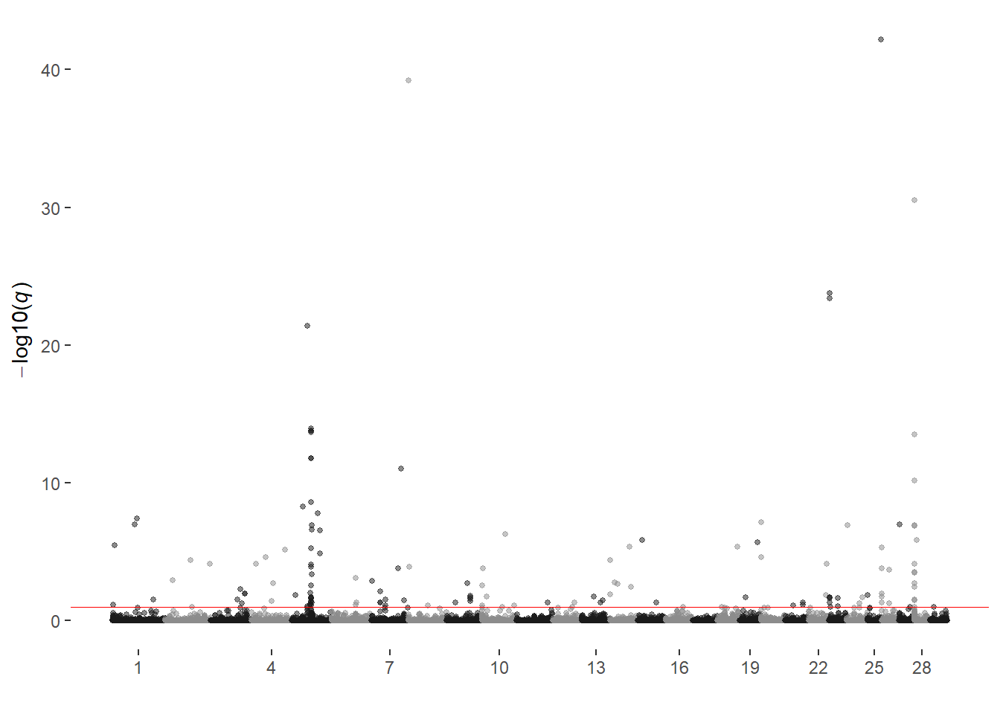
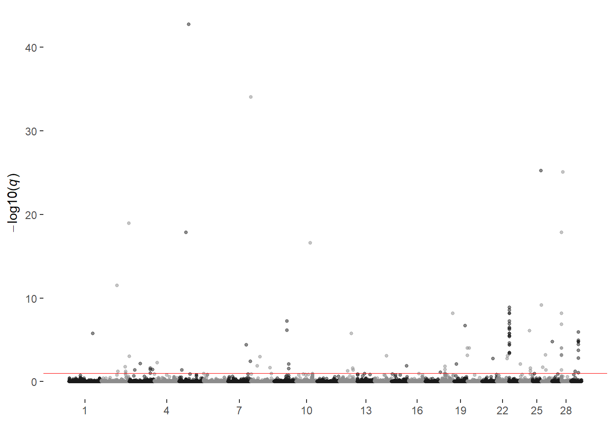

Last updated: 2020-10-27
Checks: 7 0
Knit directory: local_adaptation_sequence/
This reproducible R Markdown analysis was created with workflowr (version 1.6.2). The Checks tab describes the reproducibility checks that were applied when the results were created. The Past versions tab lists the development history.
Great! Since the R Markdown file has been committed to the Git repository, you know the exact version of the code that produced these results.
Great job! The global environment was empty. Objects defined in the global environment can affect the analysis in your R Markdown file in unknown ways. For reproduciblity it’s best to always run the code in an empty environment.
The command set.seed(20200709) was run prior to running the code in the R Markdown file. Setting a seed ensures that any results that rely on randomness, e.g. subsampling or permutations, are reproducible.
Great job! Recording the operating system, R version, and package versions is critical for reproducibility.
Nice! There were no cached chunks for this analysis, so you can be confident that you successfully produced the results during this run.
Great job! Using relative paths to the files within your workflowr project makes it easier to run your code on other machines.
Great! You are using Git for version control. Tracking code development and connecting the code version to the results is critical for reproducibility.
The results in this page were generated with repository version eac8419. See the Past versions tab to see a history of the changes made to the R Markdown and HTML files.
Note that you need to be careful to ensure that all relevant files for the analysis have been committed to Git prior to generating the results (you can use wflow_publish or wflow_git_commit). workflowr only checks the R Markdown file, but you know if there are other scripts or data files that it depends on. Below is the status of the Git repository when the results were generated:
Ignored files:
Ignored: .Rhistory
Ignored: .Rproj.user/
Ignored: analysis/genes.txt
Ignored: code/commands.txt
Ignored: data/1KBulls_ids.txt
Ignored: data/200907_SIM/
Ignored: data/200910_RAN/
Ignored: data/Bos_taurus.ARS-UCD1.2.101.gtf.gz
Ignored: data/Bos_taurus.ARS-UCD1.2.QTL.gff.gz
Ignored: data/Johnston_ATAC-seq/
Ignored: data/animal_table.rds
Ignored: data/bosTau9ToBosTau8.over.chain.gz
Ignored: data/bovine_demo.sample_metadata.csv
Ignored: data/positions.txt
Ignored: data/prism_climate_data/
Ignored: data/prism_dataframe.csv
Ignored: data/uszips.csv
Ignored: desktop.ini
Ignored: output/200822_Lab_IDs.csv
Ignored: output/200907_Lab_IDs.csv
Ignored: output/200909_RAN_Lab_IDs.csv
Ignored: output/200910_RAN/200910_RAN.phenotypes.csv
Ignored: output/200910_RAN/200910_RAN.phenotypes.txt
Ignored: output/200910_RAN/200910_RAN_Lab_IDs.csv
Ignored: output/200910_RAN/cojo/
Ignored: output/200910_RAN/gpsm/
Ignored: output/200910_RAN/greml/
Ignored: output/200910_RAN/gwas/
Ignored: output/200910_RAN/phenotypes/200910_RAN.generation_proxy.txt
Ignored: output/200910_RAN/phenotypes/200910_RAN.info.csv
Ignored: output/200910_RAN/phenotypes/200910_RAN.noLSF.allenv.txt
Ignored: output/200910_RAN/phenotypes/200910_RAN.phenotyped_ids.txt
Ignored: output/200910_RAN/phenotypes/200910_RAN.regions.txt
Ignored: output/200910_RAN/selscan/
Ignored: output/200910_RAN/sfs_selection/
Ignored: output/200910_RAN/subsets/
Ignored: output/200910_RAN_Lab_IDs.csv
Ignored: output/201020_ANGUS/
Ignored: output/201020_PBSIM/
Ignored: output/coresnps.50K.refaltaltref.txt
Ignored: output/coresnps.50K.txt
Ignored: output/coresnps.850K.refaltaltref.txt
Ignored: output/desktop.ini
Ignored: output/k10.allvars.seed2.rds
Ignored: output/k9.allvars.seed1.rds
Ignored: output/k9.allvars.seed2.rds
Ignored: output/k9.threevars.seed1.rds
Ignored: output/k9.threevars.seed2.rds
Ignored: output/kmeans_plotlist.RDS
Ignored: output/zipcode_zones.csv
Untracked files:
Untracked: RSDPlot_200910_RAN.chr1.txt.R
Untracked: analysis/PBSIM_GPSM.Rmd
Untracked: analysis/Region_FST.Rmd
Untracked: analysis/SIM_GPSM.Rmd
Untracked: analysis/selection_scans.Rmd
Untracked: code/GCTA_functions.R
Untracked: code/cluster/BIG_GCTA.json
Untracked: code/cluster/selscan.cluster.json
Untracked: code/cluster/seq_gwas.cluster.json
Untracked: code/cluster/sfs_selection.cluster.json
Untracked: code/config/200910_RAN.GPSM.config.yaml
Untracked: code/config/201020_ANGUS.GPSM.config.yaml
Untracked: code/config/201020_PBSIM.GPSM.config.yaml
Untracked: code/countgens_RAN.R
Untracked: code/snakemake_files/BOLT.snakefile
Untracked: data/bosTau9ToBosTau8.over.chain
Untracked: ftpconfigs/
Untracked: functions.R
Untracked: output/200907_SIM.850K.bim
Untracked: output/200907_SIM/
Untracked: output/200910_RAN/fst/
Untracked: output/200910_RAN/seq_cojo/
Untracked: output/200910_RAN/seq_gwas/
Untracked: test.Rmd
Untracked: test.html
Unstaged changes:
Modified: .gitignore
Modified: analysis/200910_RAN.envGWAS_results.Rmd
Deleted: analysis/GPSM.Rmd
Modified: analysis/animal_locations.Rmd
Modified: analysis/phenotype_exploration.Rmd
Modified: code/annotation_functions.R
Modified: code/cluster/GCTA.cluster.json
Modified: code/config/200907_SIM.GPSM.config.yaml
Modified: code/config/200907_SIM.envGWAS.config.yaml
Modified: code/config/200910_RAN.config.yaml
Modified: code/config/200910_RAN_noLSF.config.yaml
Modified: code/snakemake_files/GCTA.snakefile
Modified: code/snakemake_files/selscan.snakefile
Modified: code/snakemake_files/seq_gwas.snakefile
Modified: code/snakemake_files/sfs_selection.snakefile
Deleted: data/README.md
Modified: output/200910_RAN/phenotypes/200910_RAN.age.txt
Modified: output/200910_RAN/phenotypes/200910_RAN.environment.txt
Modified: output/200910_RAN/phenotypes/200910_RAN.sex.txt
Note that any generated files, e.g. HTML, png, CSS, etc., are not included in this status report because it is ok for generated content to have uncommitted changes.
These are the previous versions of the repository in which changes were made to the R Markdown (analysis/200907_SIM_GPSM.Rmd) and HTML (docs/200907_SIM_GPSM.html) files. If you’ve configured a remote Git repository (see ?wflow_git_remote), click on the hyperlinks in the table below to view the files as they were in that past version.
| File | Version | Author | Date | Message |
|---|---|---|---|---|
| Rmd | eac8419 | Troy Rowan | 2020-10-27 | 811K Simmental runs completed |
| Rmd | 9bf9aea | Troy Rowan | 2020-10-26 | Updates to Simmental and RAN analysis |
source("code/GCTA_functions.R")
source("code/annotation_functions.R")
simmental = read_csv("output/200907_SIM/phenotypes/200907_SIM.info.csv")| Phenotype | n | h^2 | SE |
|---|---|---|---|
| Full Age | 78787 | 0.619 | 0.005 |
| Full Log Age | 78787 | 0.600 | 0.005 |
| Young Age | 73811 | 0.540 | 0.005 |
| Old Age | 4976 | 0.436 | 0.021 |
| SimAngus (AN) Age | 11429 | 0.665 | 0.011 |
| SimAngus (SIM) Age | 46136 | 0.642 | 0.006 |
| Majority SIM Age | 31225 | 0.558 | 0.008 |
| Majority SIM Log Age | 31225 | 0.561 | 0.008 |
| Purebred Age | 13379 | 0.555 | 0.011 |
| Purebred Log Age | 13379 | 0.560 | 0.011 |
| Purebred Young Age | 11148 | 0.497 | 0.013 |
| Purebred Old Age | 2231 | 0.462 | 0.030 |
These are REML estimates of individual’s breeding values and residuals from GCTA GREML analysis
All animals with SIM > 0.05
n = 78,787
plot_grid(
read_blp("output/200907_SIM/greml/200907_SIM.full_age.850K.indi.blp") %>%
left_join(simmental %>%
select(international_id, age)) %>%
ggplot(aes(sample = Residual))+
stat_qq()+
stat_qq_line(color = "red")+
ggtitle("Raw Age GPSM\nResiduals")+
theme_cowplot(),
read_blp("output/200907_SIM/greml/200907_SIM.full_age.850K.indi.blp") %>%
left_join(simmental %>%
select(international_id, age)) %>%
ggplot(aes(sample = BV))+
stat_qq()+
stat_qq_line(color = "red")+
ggtitle("\nBreeding Values")+
theme_cowplot())All animals with SIM > 0.05
Log-transformed age as dependent variable
n = 78,787
plot_grid(
read_blp("output/200907_SIM/greml/200907_SIM.full_log_age.850K.indi.blp") %>%
left_join(simmental %>%
select(international_id, age)) %>%
ggplot(aes(sample = Residual))+
stat_qq()+
stat_qq_line(color = "red")+
ggtitle("Log Transformed Age \nGPSM Residuals")+
theme_cowplot(),
read_blp("output/200907_SIM/greml/200907_SIM.full_log_age.850K.indi.blp") %>%
left_join(simmental %>%
select(international_id, age)) %>%
ggplot(aes(sample = BV))+
stat_qq()+
stat_qq_line(color = "red")+
ggtitle("\nBreeding Values")+
theme_cowplot())Animals Born since 2008 with SIM > 0.05
n = 73,811
plot_grid(
read_blp("output/200907_SIM/greml/200907_SIM.full_young_age.850K.indi.blp") %>%
left_join(simmental %>%
select(international_id, age)) %>%
ggplot(aes(sample = Residual))+
stat_qq()+
stat_qq_line(color = "red")+
ggtitle("Young Age \nGPSM Residuals")+
theme_cowplot(),
read_blp("output/200907_SIM/greml/200907_SIM.full_young_age.850K.indi.blp") %>%
left_join(simmental %>%
select(international_id, age)) %>%
ggplot(aes(sample = BV))+
stat_qq()+
stat_qq_line(color = "red")+
ggtitle("\nGPSM Breeding Values")+
theme_cowplot())Animals Born prior to 2008 with SIM > 0.05
n = 4,976
plot_grid(
read_blp("output/200907_SIM/greml/200907_SIM.pb_old_age.850K.indi.blp") %>%
left_join(simmental %>%
select(international_id, age)) %>%
ggplot(aes(sample = Residual))+
stat_qq()+
stat_qq_line(color = "red")+
ggtitle("Old Animals\nGPSM Residuals")+
theme_cowplot(),
read_blp("output/200907_SIM/greml/200907_SIM.pb_old_age.850K.indi.blp") %>%
left_join(simmental %>%
select(international_id, age)) %>%
ggplot(aes(sample = BV))+
stat_qq()+
stat_qq_line(color = "red")+
ggtitle("\nGPSM Residuals")+
theme_cowplot())Animals with SIM < 0.30 and ANG > 0.50
plot_grid(read_blp("output/200907_SIM/greml/200907_SIM.simangus3050.850K.indi.blp") %>%
left_join(simmental %>%
select(international_id, age)) %>%
ggplot(aes(sample = Residual))+
stat_qq()+
stat_qq_line(color = "red")+
ggtitle("SimAngus (>50% AN)\nGPSM Residuals")+
theme_cowplot(),
read_blp("output/200907_SIM/greml/200907_SIM.simangus3050.850K.indi.blp") %>%
left_join(simmental %>%
select(international_id, age)) %>%
ggplot(aes(sample = BV))+
stat_qq()+
stat_qq_line(color = "red")+
ggtitle("\nGPSM Breeding Values")+
theme_cowplot())Animals with SIM > 0.20 and SIM < 0.70
n = 11,429
plot_grid(read_blp("output/200907_SIM/greml/200907_SIM.simangus2070.850K.indi.blp") %>%
left_join(simmental %>%
select(international_id, age)) %>%
ggplot(aes(sample = Residual))+
stat_qq()+
stat_qq_line(color = "red")+
ggtitle("SimAngus\nRaw Age\nGPSM Residuals")+
theme_cowplot(),
read_blp("output/200907_SIM/greml/200907_SIM.simangus2070.850K.indi.blp") %>%
left_join(simmental %>%
select(international_id, age)) %>%
ggplot(aes(sample = BV))+
stat_qq()+
stat_qq_line(color = "red")+
ggtitle("\nGPSM Breeding Values")+
theme_cowplot())Animals with SIM > 0.70
n = 31,225
plot_grid(read_blp("output/200907_SIM/greml/200907_SIM.sim70_age.850K.indi.blp") %>%
left_join(simmental %>%
select(international_id, age)) %>%
ggplot(aes(sample = Residual))+
stat_qq()+
stat_qq_line(color = "red")+
ggtitle("Majority Simmental Animals\nRaw Age\nGPSM Residuals")+
theme_cowplot(),
read_blp("output/200907_SIM/greml/200907_SIM.sim70_age.850K.indi.blp") %>%
left_join(simmental %>%
select(international_id, age)) %>%
ggplot(aes(sample = BV))+
stat_qq()+
stat_qq_line(color = "red")+
ggtitle("\nGPSM Breeding Values")+
theme_cowplot())Animals with SIM > 0.70
n = 31,225
plot_grid(read_blp("output/200907_SIM/greml/200907_SIM.sim70_log_age.850K.indi.blp") %>%
left_join(simmental %>%
select(international_id, age)) %>%
ggplot(aes(sample = Residual))+
stat_qq()+
stat_qq_line(color = "red")+
ggtitle("Majority Simmental Animals\nLog Transformed Age\nGPSM Residuals")+
theme_cowplot(),
read_blp("output/200907_SIM/greml/200907_SIM.sim70_log_age.850K.indi.blp") %>%
left_join(simmental %>%
select(international_id, age)) %>%
ggplot(aes(sample = BV))+
stat_qq()+
stat_qq_line(color = "red")+
ggtitle("\nGPSM Breeding Values")+
theme_cowplot())Animals with SIM = 1.0
n = 13,379
plot_grid(read_blp("output/200907_SIM/greml/200907_SIM.pb_age.850K.indi.blp") %>%
left_join(simmental %>%
select(international_id, age)) %>%
ggplot(aes(sample = Residual))+
stat_qq()+
stat_qq_line(color = "red")+
ggtitle("Purebred Simmental\nRaw Age\nGPSM Residuals")+
theme_cowplot(),
read_blp("output/200907_SIM/greml/200907_SIM.pb_age.850K.indi.blp") %>%
left_join(simmental %>%
select(international_id, age)) %>%
ggplot(aes(sample = BV))+
stat_qq()+
stat_qq_line(color = "red")+
ggtitle("\nGPSM Breeding Values")+
theme_cowplot())Animals with SIM = 1.0
n = 13,379
plot_grid(read_blp("output/200907_SIM/greml/200907_SIM.pb_log_age.850K.indi.blp") %>%
left_join(simmental %>%
select(international_id, age)) %>%
ggplot(aes(sample = Residual))+
stat_qq()+
stat_qq_line(color = "red")+
ggtitle("Purebred Simmental\nLog Transformed Age\nGPSM Residuals")+
theme_cowplot(),
read_blp("output/200907_SIM/greml/200907_SIM.pb_log_age.850K.indi.blp") %>%
left_join(simmental %>%
select(international_id, age)) %>%
ggplot(aes(sample = BV))+
stat_qq()+
stat_qq_line(color = "red")+
ggtitle("\nGPSM Breeding Values")+
theme_cowplot())Animals with SIM = 1.0 born since 2008
n = 11,148
plot_grid(read_blp("output/200907_SIM/greml/200907_SIM.pb_young_age.850K.indi.blp") %>%
left_join(simmental %>%
select(international_id, age)) %>%
ggplot(aes(sample = Residual))+
stat_qq()+
stat_qq_line(color = "red")+
ggtitle("Purebred Simmental (Post-2007)\nRaw Age\nGPSM Residuals")+
theme_cowplot(),
read_blp("output/200907_SIM/greml/200907_SIM.pb_young_age.850K.indi.blp") %>%
left_join(simmental %>%
select(international_id, age)) %>%
ggplot(aes(sample = BV))+
stat_qq()+
stat_qq_line(color = "red")+
ggtitle("\nGPSM Breeding Values")+
theme_cowplot())Animals with SIM = 1, born before 2008
n = 2,231
plot_grid(read_blp("output/200907_SIM/greml/200907_SIM.pb_old_age.850K.indi.blp") %>%
left_join(simmental %>%
select(international_id, age)) %>%
ggplot(aes(sample = Residual))+
stat_qq()+
stat_qq_line(color = "red")+
ggtitle("Purebred Simmental (Pre 2008)\nRaw Age\nGPSM Residuals")+
theme_cowplot(),
read_blp("output/200907_SIM/greml/200907_SIM.pb_old_age.850K.indi.blp") %>%
left_join(simmental %>%
select(international_id, age)) %>%
ggplot(aes(sample = BV))+
stat_qq()+
stat_qq_line(color = "red")+
ggtitle("\nGPSM Breeding Values")+
theme_cowplot())GWAS results for the 685,120 SNPs with MAF > 0.01 in our imputed dataset.
All animals with SIM > 0.05
n = 78,787
ggmanhattan2(full_age,
prune = 0.01,
sig_threshold_p = 7.298e-08)ggmanhattan2(full_age,
value = q,
prune = 0.9,
sig_threshold_q = 0.1)
All animals with SIM > 0.05
Log-transformed age as dependent variable
n = 78,787
ggmanhattan2(full_log_age,
prune = 0.01,
sig_threshold_p = 7.298e-08)ggmanhattan2(full_log_age,
value = q,
prune = 0.9,
sig_threshold_q = 0.1)Animals Born since 2008 with SIM > 0.05
n = 73,811
ggmanhattan2(young_age,
prune = 0.01,
sig_threshold_p = 7.298e-08)ggmanhattan2(young_age,
value = q,
prune = 0.9,
sig_threshold_q = 0.1)
Animals Born prior to 2008 with SIM > 0.05
n = 4,976
ggmanhattan2(old_age,
prune = 0.01,
sig_threshold_p = 7.298e-08)ggmanhattan2(old_age,
value = q,
prune = 0.9,
sig_threshold_q = 0.1)Animals with SIM < 0.30 and ANG > 0.50
ggmanhattan2(simangus_an_age,
prune = 0.01,
sig_threshold_p = 7.298e-08)ggmanhattan2(simangus_an_age,
value = q,
prune = 0.9,
sig_threshold_q = 0.1)Animals with SIM > 0.20 and SIM < 0.70
n = 11,429
ggmanhattan2(simangus_age,
prune = 0.01,
sig_threshold_p = 7.298e-08)ggmanhattan2(simangus_age,
value = q,
prune = 0.9,
sig_threshold_q = 0.1)Animals with SIM > 0.70
n = 31,225
ggmanhattan2(maj_sim_age,
prune = 0.01,
sig_threshold_p = 7.298e-08)ggmanhattan2(maj_sim_age,
value = q,
prune = 0.9,
sig_threshold_q = 0.1)Animals with SIM > 0.70
n = 31,225
ggmanhattan2(maj_sim_log_age,
prune = 0.01,
sig_threshold_p = 7.298e-08)ggmanhattan2(maj_sim_log_age,
value = q,
prune = 0.9,
sig_threshold_q = 0.1)Animals with SIM = 1.0
n = 13,379
ggmanhattan2(pb_age,
prune = 0.01,
sig_threshold_p = 7.298e-08)ggmanhattan2(pb_age,
value = q,
prune = 0.9,
sig_threshold_q = 0.1)Animals with SIM = 1.0
n = 13,379
ggmanhattan2(pb_log_age,
prune = 0.01,
sig_threshold_p = 7.298e-08)ggmanhattan2(pb_log_age,
value = q,
prune = 0.9,
sig_threshold_q = 0.1)Animals with SIM = 1.0 born since 2008
n = 11,148
ggmanhattan2(pb_young_age,
prune = 0.01,
sig_threshold_p = 7.298e-08)ggmanhattan2(pb_young_age,
value = q,
prune = 0.9,
sig_threshold_q = 0.1)Animals with SIM = 1, born before 2008
n = 2,231
ggmanhattan2(pb_old_age,
prune = 0.01,
sig_threshold_p = 7.298e-08)ggmanhattan2(pb_old_age,
value = q,
prune = 0.9,
sig_threshold_q = 0.1)
sessionInfo()R version 4.0.2 (2020-06-22)
Platform: x86_64-w64-mingw32/x64 (64-bit)
Running under: Windows 10 x64 (build 19041)
Matrix products: default
locale:
[1] LC_COLLATE=English_United States.1252
[2] LC_CTYPE=English_United States.1252
[3] LC_MONETARY=English_United States.1252
[4] LC_NUMERIC=C
[5] LC_TIME=English_United States.1252
attached base packages:
[1] stats graphics grDevices utils datasets methods base
other attached packages:
[1] viridis_0.5.1 viridisLite_0.3.0 DT_0.15 gprofiler2_0.2.0
[5] cowplot_1.1.0 GALLO_0.99.0 qvalue_2.20.0 pedigree_1.4
[9] reshape_0.8.8 HaploSim_1.8.4 Matrix_1.2-18 lubridate_1.7.9
[13] forcats_0.5.0 stringr_1.4.0 dplyr_1.0.2 readr_1.3.1
[17] tidyr_1.1.2 tibble_3.0.3 tidyverse_1.3.0 here_0.1
[21] ggcorrplot_0.1.3 corrr_0.4.2 factoextra_1.0.7 ggplot2_3.3.2
[25] purrr_0.3.4 ggthemes_4.2.0 maps_3.3.0 knitr_1.30
[29] workflowr_1.6.2
loaded via a namespace (and not attached):
[1] colorspace_1.4-1 ellipsis_0.3.1
[3] dynamicTreeCut_1.63-1 rprojroot_1.3-2
[5] circlize_0.4.10 XVector_0.28.0
[7] GenomicRanges_1.40.0 GlobalOptions_0.1.2
[9] fs_1.5.0 rstudioapi_0.11
[11] farver_2.0.3 ggrepel_0.8.2
[13] fansi_0.4.1 xml2_1.3.2
[15] codetools_0.2-16 splines_4.0.2
[17] doParallel_1.0.15 jsonlite_1.7.1
[19] Rsamtools_2.4.0 broom_0.7.0
[21] dbplyr_1.4.4 compiler_4.0.2
[23] httr_1.4.2 backports_1.1.10
[25] assertthat_0.2.1 lazyeval_0.2.2
[27] cli_2.0.2 later_1.1.0.1
[29] htmltools_0.5.0 tools_4.0.2
[31] gtable_0.3.0 glue_1.4.2
[33] GenomeInfoDbData_1.2.3 reshape2_1.4.4
[35] Rcpp_1.0.5 Biobase_2.48.0
[37] cellranger_1.1.0 vctrs_0.3.4
[39] Biostrings_2.56.0 rtracklayer_1.48.0
[41] crosstalk_1.1.0.1 iterators_1.0.12
[43] xfun_0.17 rvest_0.3.6
[45] lifecycle_0.2.0 XML_3.99-0.5
[47] zlibbioc_1.34.0 scales_1.1.1
[49] hms_0.5.3 promises_1.1.1
[51] SummarizedExperiment_1.18.2 parallel_4.0.2
[53] RColorBrewer_1.1-2 yaml_2.2.1
[55] gridExtra_2.3 stringi_1.5.3
[57] unbalhaar_2.0 S4Vectors_0.26.1
[59] foreach_1.5.0 BiocGenerics_0.34.0
[61] BiocParallel_1.22.0 shape_1.4.5
[63] GenomeInfoDb_1.24.2 matrixStats_0.56.0
[65] rlang_0.4.7 pkgconfig_2.0.3
[67] bitops_1.0-6 evaluate_0.14
[69] lattice_0.20-41 labeling_0.3
[71] GenomicAlignments_1.24.0 htmlwidgets_1.5.1
[73] tidyselect_1.1.0 plyr_1.8.6
[75] magrittr_1.5 R6_2.4.1
[77] IRanges_2.22.2 generics_0.0.2
[79] DelayedArray_0.14.1 DBI_1.1.0
[81] pillar_1.4.6 haven_2.3.1
[83] whisker_0.4 withr_2.3.0
[85] RCurl_1.98-1.2 modelr_0.1.8
[87] crayon_1.3.4 plotly_4.9.2.1
[89] rmarkdown_2.3 grid_4.0.2
[91] readxl_1.3.1 data.table_1.13.0
[93] blob_1.2.1 git2r_0.27.1
[95] reprex_0.3.0 digest_0.6.25
[97] httpuv_1.5.4 stats4_4.0.2
[99] munsell_0.5.0